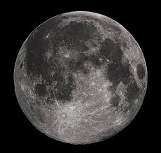

|

AY
Ay, Dünya’nın tek doğal uydusudur ve gece gökyüzünde görülebilen en parlak gök cismidir. Dünya’ya en yakın gök cismi olması nedeniyle tarih boyunca
insanlar için büyük bir merak ve gözlem konusu olmuştur. Ay’ın Dünya’ya uzaklığı ortalama 384.000 kilometredir ve bu mesafe sayesinde hem çıplak gözle
hem de teleskoplarla detaylı biçimde incelenebilir.
Ay, yaklaşık 4,5 milyar yıl önce, Dünya’nın oluşumundan kısa bir süre sonra meydana gelmiştir. Bilim insanlarına göre, Dünya ile Mars büyüklüğünde bir
gök cisminin çarpışması sonucu kopan parçalar birleşerek Ay’ı oluşturmuştur. Bu teoriye “dev çarpışma hipotezi” adı verilir.
Ay’ın yüzeyi kraterlerle, dağlarla ve lav düzlükleriyle kaplıdır. Bu karanlık lav alanlarına “Maria” adı verilir ve çıplak gözle gri lekeler halinde
görünürler. Ay’da atmosfer neredeyse hiç bulunmadığı için hava, rüzgar veya su erozyonu yoktur; bu nedenle milyonlarca yıl önce oluşan kraterler hâlâ
bozulmadan durur.
Ay, kendi ekseni etrafında dönerken aynı zamanda Dünya’nın çevresinde de döner. İlginç olan, bu iki dönüş süresinin aynı olmasıdır — yaklaşık 27,3 gün.
Bu nedenle Ay’ın hep aynı yüzü Dünya’ya dönüktür; biz sadece “yakın yüzü”nü görürüz, “karanlık yüz” ise Dünya’dan asla görülmez.
Ay, Dünya üzerindeki birçok doğal olayı etkiler. En bilinen etkisi gelgit olayıdır. Ay’ın kütle çekim kuvveti okyanuslardaki suları kendine çeker, bu
da deniz seviyesinin yükselip alçalmasına neden olur. Ayrıca Ay, Dünya’nın eksen eğikliğini dengeleyerek iklimin aşırı değişmesini engeller. Bu yönüyle,
Dünya’daki yaşamın kararlılığı açısından da önemli bir role sahiptir.
Ay’ın evreleri —yeni ay, ilk dördün, dolunay ve son dördün— Dünya’dan bakıldığında Güneş ışığının geliş açısına göre değişir. Bu döngü, insanlık tarihinin
en eski takvimlerinden biri olan ay takviminin temelini oluşturmuştur.
1969 yılında Apollo 11 görevi ile insanlar ilk kez Ay’a ayak bastı. Astronotlar Neil Armstrong ve Buzz Aldrin, Ay yüzeyine iniş yaparak “insanlık için
büyük bir adım” olarak tanımlanan olayı gerçekleştirdi. O günden bu yana Ay, uzay araştırmalarında hem sembolik hem de bilimsel açıdan büyük önem
taşımaktadır.
Sonuç olarak Ay, yalnızca Dünya’nın bir uydusu değil, aynı zamanda insanlığın evrene bakışını değiştiren bir gök cismidir. Yüzeyinin sessizliği,
hareketinin düzeni ve Dünya üzerindeki etkileriyle, hem bilimsel hem kültürel açıdan insanlığın tarihine kazınmış benzersiz bir göksel dosttur.
|